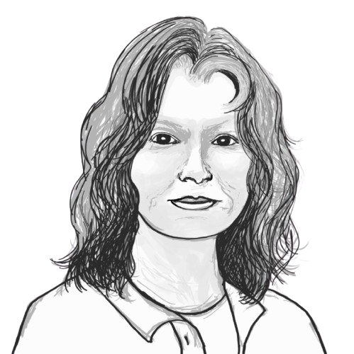

Mathematics without Borders
Rowena Ball explores whose knowledge counts as mathematics, and what we gain by looking beyond conventional boundaries.
Season 2 · Episode 9
DESCRIPTION
What counts as mathematics, and who gets to decide? Professor Rowena Ball explores mathematics beyond conventional boundaries, from Indigenous smoke telegraphy and information flow to nonlinear dynamics and the emergence of life. Through feedback, fluctuations and interconnected systems, we discover how diverse ways of knowing can reshape our understanding of the world.
Listen
Guest speaker

Rowena Ball
Professor Rowena Ball is a mathematician at the Mathematical Sciences Institute, Australian National University. In her own words:
I had the benefit of a full multidisciplinary training in mathematics and in mathematical chemical physics, so that has enabled my research journey to take the scenic route. (A series of ARC fellowships has helped too.) Working on complex and nonlinear dynamical systems problems with scientists and engineers from different disciplines has given me a wider appreciation of the cultural frameworks of knowledge. Respect for culture underpins my group’s research and teaching initiative on non-Western and Indigenous mathematics.
Quick quiz
Transcript
Open transcript
Speaker 1 (Sungyeon)
Today, I am thrilled to have Professor Rowena Ball from the Mathematical Sciences Institute at the Australian National University. Welcome, Rowena!
Speaker 2 (Rowena)
Well, I’m thrilled to be having this yarn with you, Sungyeon.
Speaker 1
Thank you so much for taking your time to do this.
Speaker 2
Well, thanks so much for inviting me to this session of your fabulous podcast series. And it’s also a great privilege to be doing this interview on Ngunnawal and Ngambri country. I feel the ancestors – I know we’re in a studio, but I feel the ancestors are with us and are listening and are guiding us.
Speaker 1
Thanks, Rowena. I’d also like to pay my respect to the traditional custodians of the land we’re meeting on today. With gratitude, let’s get started! Your research career seems remarkably wide-ranging, from nonlinear dynamics and fluctuation physics, to the origins of life, and also Indigenous mathematics and even railways. I got to wonder how you started out your research, your career journey in mathematics?
Speaker 2
It was more like one of those mystery flights or train journeys that used to be popular, where you turn up at Central Station or the airport. And you’re not told the destination in advance, but you know you’re in for an exciting ride. The journey itself is a major component of an exciting composite destination. But the Venn diagram of thrilling journeys and what you can get paid for has to have substantial overlap. So my first postdoc position was in the School of Mathematics at Leeds University in the UK, collaborating with engineering on real-world mathematics problems involving feedback and instabilities and chaotic dynamics. That’s how I started meeting and working with a wonderful diversity of people. And it’s a way of working that I continue to value to this day. I had the benefit, though, of a full multidisciplinary training in mathematics and in mathematical chemical physics. So that enabled the journey to take the scenic route.
Speaker 1
Oh, I see. Wow. Yeah, thanks for sharing. We’ll get to unpack some of your work shortly, but before diving in, I think you mentioned something about chaos theory and nonlinear dynamics. So could you please explain what they are and why they are important.
Speaker 2
One of the little sort of epigrams or memes often reposted on social media goes something like this. Nonlinear dynamics is like defining the bulk of zoology as the study of non-elephants. I suppose the point of that is that linearity is the exceptional case. Although now I come to think of it, nobody has ever provided a convincing proof that elephants are linear.
Nonlinear dynamics, you can tell by the name, is about journeys. And journeys have a never-ending fascination for humans. Changes in position with respect to time. The best, or for that matter, the worst journeys are nonlinear and layered. The First Nations historian, storyteller elders typically tell one layer of the story at a time. And people say, that can’t be true. But when you add up all the layers over time, it is true. Such as it could be an accurate account of the habits and last cycle of an animal. That’s the definite integral, isn’t it? And the journey or the story is nonlinear in time and space. So that’s why you have to integrate to get the true picture.
So the problem of integration, which we usually regard as solution of differential equations by Hook or by Crooks, usually by Crooks or numerical approximation, because most of them just don’t have analytic solutions. That was a practical problem for all societies for many hundreds or thousands of years, not just in Europe from the 17th century. In my PhD project, I developed mathematics that originated in Russia to investigate problems of thermochemical runaway and thermal explosions. That’s nonlinear dynamics for you with a bang. Or, you asked what are nonlinear dynamics. Those particular phenomena happen because the rate of chemical reaction is exponential with respect to the temperature, whereas the rate of heat loss is linear in the temperature. But in general, nonlinear science is important, because it is multi-field and multidisciplinary. And a lot of leading-edge research fields have grown up synergistically with advances in the theory and mathematics of nonlinear dynamics. So very diverse fields. Optics, ecosystems, neuroscience, climatology, earth sciences, branches of engineering have all been given new impetus and direction from lateral application of the mathematics of nonlinear dynamics. So what we are seeing is that nonlinear theory and mathematics is driving developments in very diverse.
Speaker 1
Yeah, absolutely. What you just said about arriving at a railway station without a particular destination in mind really captures the spirit of nonlinear dynamics, I guess. We might have some expectations about where the journey could take us, but there are also things we simply cannot anticipate until they unfold along the way. So I think that’s a lovely analogy for nonlinear dynamics as opposed to the more predictable and proportional relationships we often associate with linear systems.
Speaker 2
Yeah, it’s very exciting. And that journey is reason enough to study it, to look out the window, look at the landscapes around you, look at the events around you, and saying, what is the story? and then integrating those stories to obtain a complete picture of the behaviour.
Speaker 1
Yeah, that’s a lovely way of putting it. So it’s not just about where the journey takes us, but also the stories that emerge along the way and how they come together to reveal a bigger picture. And I suppose that’s part of what makes studying complex systems so fascinating. We don’t necessarily know the whole story in advance, right?
Speaker 2
Yeah.
Speaker 1
So now I’d like to spend a little bit of time to hear about your Mathematics Without Borders program. And I believe it begins with a deceptively simple question asking, what is mathematics? So the question that I wanted to ask you about this was, what have you come to think we miss when we answer that question only through the mathematics represented in conventional curricula?
Speaker 2
We actually lead the Mathematics Without Borders program with three questions, which are coupled. What is mathematics? as you’ve just asked. What is included in mathematics? and who gets to say? Now reams have been written on the first question, what is mathematics? And just in the past few months, it seems the whole world and their dog has had their say on social media and blogs!
But to answer this first question, we really need to start with the third question: Who gets to say what mathematics is or is not?
The mathematics curriculum we have is a colonial conquest. What is thought of as Western mathematics, or mainstream or British European mathematics, colonised the minds and the curriculums of the whole world. For instance, Japanese native Wasan mathematics was swept out in 1868 and replaced with the Western curriculum. And in standard school and university curriculums, everywhere in the world, mathematics is taught as the privileged manifestation of European knowledge. And in undergraduate mathematics, students study everything that has been done in the last three centuries in Europe and the US, but almost nothing about what happened anywhere else in the world before or during that time.
So it’s not surprising they absorb this authoritative but incorrect message to the effect that the rest of the world never had any mathematics. So the global dominance of Western-based mathematics and the whole epistemology in curriculums and in research and applications has transformed society for better or worse; or for better and worse. But it also has led to a neglect, if not active suppression of non-Western and Indigenous mathematical knowledges and misrepresentations of mathematical histories. So with some exceptions that are usually marginalised and infantilised under the label of ethno-mathematics, the mathematical sciences have lagged and even stonewalled in recognising the substance or even the existence of non-mainstream mathematical knowledge. So we know the great traditions of Indian and Chinese mathematics have been studied by Western historians, but they are pretty much ignored in mainstream mathematics itself. Just for example, evidence that beyond all reasonable doubt that the calculus originated in India three centuries before Newton and Leibniz and was taken to Europe has not dented the Newton, Leibniz, Gregory exclusive attribution.
Speaker 1
Yeah.
Speaker 2
And I’ve got a student onto it.
Speaker 1
That’s great. Yeah, I think when it comes to the origin of the ideas like that, it may often be the case that we are miscrediting some other people without knowing the entirety or the broader picture of where the ideas originated from.
Speaker 2
Yes, and once those myths propagate are embedded into the curriculum, they propagate down the centuries and people repeat them.
Speaker 1
Exactly. I believe there’s a certain momentum that ideas and concepts can acquire over time. Even though they are not physical entities, they still travel across space and time. And I suppose there’s a kind of positive feedback at work here. As certain ideas become more widely accepted and established, they gain greater visibility and authority, which in turn reinforces their dominance, right? So meanwhile, other ideas, and sometimes even their original contributors, gradually fade from view. So our conventional curricula may actually play a part in sustaining that feedback loop.
Speaker 2
Yes, you’re so right, Sungyeon, and this is what we try to address in our program, answering the third question – who gets to say– leads us to more inclusive answers to the second question: what can be included in mathematics? And to the first question, what is mathematics? And best of all, it will also give us more and bigger mathematics. The more mathematics, the better.
And why do we need more, and more diverse, mathematics? Well, let me put it this way. In 1959, the Unreasonable Effectiveness of Mathematics (in the Natural Sciences) was contemplated by Wigner as this wonderful gift which we neither understand nor deserve. The wonder being that mathematics is so powerful in describing and predicting observed behaviours of the physical and even the biological and social worlds.
That was 1959. 65 years later, is mathematics still so wonderfully, unreasonably effective? Mathematics publications proliferate like never before. Yet those worlds, the physical, biological and social, are beset by even worse problems that are just unprecedented in kind or in scale and global reach. We have global heating, this despairing, seemingly endless cycles of regional wars that humanity seems locked into, the rise of the far-right, the intractable biases of artificial intelligence, microplastics pollution of the oceans, the list just goes on.
So we might begin to suspect that mathematics could benefit from a bit of new shot in order to update a bit and maintain this celebrated “unreasonable effectiveness” in the contemporary and near future settings. So that’s why we should be asking, where might that new shot come from? What is a way forward that has the best potential to shape and ensure the vitality and future of the mathematical sciences?
And secondly, to benefit humanity in the immediate future. And if we look at opportunities rather than deficits, there is just unprecedented scope for diversification of the cultural base of mathematics through greater inclusion of non-Western and Indigenous mathematical knowledge. But there’s a lot of groundwork to be done. Mathematics Without Borders aims to prepare and sow that ground in our research and teaching programs.
Speaker 1
Yeah, that was really beautifully put. And I guess it takes some courage for students to take out different approaches sometimes as well, away from what they are taught in their traditional organisation.
Speaker 2
I thought that too. But the course was actually sold out. We had to turn students away. So it’s something that students are looking for. And we got many inquiries from outside the institution. And students talk to each other. You see? So I actually think that maybe 10 years ago that would have been true. Students would have looked at that very cautiously. But things have changed. They’re looking; they are shaping the future they will graduate into and into their working lives.
Speaker 1
Right. That sounds music to my ears actually. Students these days are taking more agency in choosing what kind of approaches they’d like to take in learning mathematics and probably in many others as well. And it’s really delightful to hear that the course was such a great success with lots of students’ interest in the diversity of mathematics.
So with that uplifting and hopeful message in mind, now let us zoom into one of your studies about Indigenous smoke telegraphy. I found this really fascinating and thought that it should be shared more widely because at the core of cybernetics, we are all interested in understanding information flow and communication to regulate not just oneself but regulate the environment as a whole. So could you first describe how smoke was used as a communication technology, and what kinds of mathematical concepts are there?
Speaker 2
Smoke signalling seems to be a very ancient, long distance communication technology. So when was it invented? smoke is a natural signal, of course. It’s a signal of fire. And humans would have exploited its potential very early in our history. If we go back 65,000 years in Australia when sea levels were 100 metres lower, 100 or more metres lower during a glacial maximum, smoke from natural bushfires on the exposed greater Australian shelf in the north would have been visible to people on Timor or nearby islands. So during that glacial maximum period, people migrating out of Africa over the thousands of years and down into Southeast Asia could get to Timor and nearby islands. And they would have seen smoke, natural bushfire smoke from Australia, maybe 50 or 80 kilometres away. And that could have inspired the original voyages to Australia.
So that begs the question, did those voyagers who arrived safely in perhaps a fleet of canoes, did they send up smoke signals to family and friends they left behind? And did those smoke telegrams say something like: ARRIVED SAFELY. LAND OF PLENTY. BUILD MORE OUTRIGGER CANOES. MAKE SAILS. COME SOON. You have to ask, was smoke signalling technology Australia’s first export? Well, that’s speculation, but it’s not unreasonable speculation and it may become more reasonable in future archaeological studies.
What we do know though from authentic pre-colonial sources is that by the mid-1600s, smoke telegraphy relayed coded signals with perfect fidelity relayed over long distances. It was very highly developed. And even decades after the transcontinental electrical telegraph went in, 1872, smoke telegraphy was still the finest, most effective and sophisticated long distance communication system in the world.
Speaker 1
Yeah, that’s remarkable. Would there be anything that you’d like to emphasise about smoke signalling in terms of the relationship between formal mathematics and embodied or empirical knowledge?
Speaker 2
Oh, there’s so much that you’d have to read the papers that I’ve given as references! But one thing I’d like to talk about because it just blows my mind. It absolutely blows my mind that chiral smoke signals or spirals of opposite handedness were purposely created by women and men smoke signallers and formed part of the code. And there were numerous eyewitness accounts and descriptions of the creation of left-handed and right-handed smoke spirals to mean different things. And the expert signallers understood what they were doing.
Knowledge of chiral symmetry was lived empirical mathematics of Indigenous societies. But it was not until well into the 20th century that mathematics and mathematicians began to take an interest in chirality as a geometric property. And the problem of chirality to this day is still not fully resolved in mathematics. Its use in smoke signal coding seems to have been a world first in a working communications technology. So it’s one instance of how empirical knowledge and effective technological usage often precedes theoretical or algebraic formulation.
Speaker 1
That’s right, yeah. And for those listeners who are not really familiar with chirality, how would you describe that? Maybe as a shape or with an example.
Speaker 2
So chiral pairs of objects are non-superimposable mirror images, and you can’t convert one into the other. There’s a substantial activation energy. Chirality in chemistry has been known about since the 1850s, since Louis Pasteur separated chiral crystals of ammonium tartrate by eye using tweezers, and in physics from 1904. But it was not thought to be, for some reason, it just wasn’t thought to be mathematician’s business until much later. And in biochemistry and pharmacology, the full importance of biological chirality… The full importance of chirality in physiology and biology became evident after the thalidomide tragedies of the 1950s. One form, either a left- or a right-hand form, only one form of a drug molecule is effective in humans. And the other form — the other-handed form — is highly toxic. So in the case of the thalidomide tragedies, the wrong-handed molecule caused birth defects.
Speaker 1
That’s right. So it’s really important to distinguish between the left-handed and right-handed forms of a molecule, because even though they may have the same chemical composition, they can interact with biological systems in very different ways, potentially leading to serious safety consequences, as the thalidomide tragedy illustrates.
Speaker 2
Well, in biology, they can, because biology is fundamentally chiral. So all organisms, the whole of biology that we know of uses L-amino acids and D-ribose, so D-ribo-nucleic acids or D-ribo deoxy-ribonucleic acids in our RNA and DNA.
The question arises, well, why don’t the aliens come here? Well, the aliens, why don’t the aliens from another galaxy ever come here? Where is everybody? I think that’s a famous question that’s being asked and that was asked I think in 1959 by Fermi, a physicist. And then we have in 1969, I think we had the Drake equation, which assigns probabilities to life being found elsewhere in the universe. And so that question, well, where is everybody? Well, the aliens don’t come here because the aliens are of opposite chirality. So the aliens use D-amino acids and L-ribose. And if they came here, the pub bistro menus would have to include options like OC for opposite chirality as well as V, V for vegetarian and GF for gluten free. Otherwise the aliens would starve!
Speaker 1
They wouldn’t survive here! That’s right.
Speaker 2
They couldn’t get anything to eat. But making food of opposite chirality is hugely expensive. And that would have to be made in the laboratory. So it’s prohibitively expensive. So that’s just sort of a, it’s a fun thing to think about. It’s just a silly fun thing to think about, but it makes you ponder on the fundamental importance of chirality to life.
And the fact that Indigenous societies were making use of chirality in technology for hundreds of years, if not longer at least, before Western science and mathematics began to describe it and became aware of it.
And chirality was known to other societies. It’s reflected in art — I’ve seen this Roman mosaic in an early Christian basilica which has three left-handed snails and I think 8 or 5 right-handed ones. Left-handed chiral shell snails are very rare and they used to be called kings. And in early Christian mythology there were three kings. So that’s in early sort of nativity mythology. And so that mosaic clearly is telling a story. But all the people, all the artists and archaeologists looking at that mosaic didn’t spot it. It takes a mathematician to spot it.
Speaker 1
Oh, interesting!
Speaker 2
So chirality was known, but as I’ve said before, Indigenous societies were the first to actually use it as a really practical and effective technology for communications.
Speaker 1
Yeah, indeed. That’s really fascinating. Speaking of RNA and DNA just now, I think it creates a really good segue for us to talk about another part of your work, which concerns the emergence of life. So how does a mathematician approach a question as enormous as how non-living chemistry begins to organise into something lifelike? I think this is such a fascinating domain.
Speaker 2
Oh, well, I guess that’s a fair question. It was more like, how can mathematics help? Emergence-of-life science has become this huge international, interdisciplinary science in its own right. It seems to have this whole suite of complex nonlinear dynamics problems associated with it. And I’ll give you an example, example of the chirality of life, but it’s kind of harder than that because a chiral pair of structures is isometric as well as being non-superimposable mirror images. It’s not surprising that mathematics still hasn’t come to terms with it. It means that we need coordinates to distinguish them. And I feel this is an area in which human or non-AI mathematics could help make real advances in understanding the origin and occurrence and distribution and fate of life in the universe. Another example of how mathematics can help is the problem of stability of complex networks. So life emerged as a molecular network in a fluctuating, messy, driven, dissipative setting.
Speaker 1
So you just mentioned fluctuations, and I believe that we often associate fluctuations to something like noise, something destructive. But I wonder whether in your work, fluctuations can actually be constructive?
Speaker 2
Oh, that’s a fabulous observation. And it’s so, insightful of you to ask that question and make that comment. One of the humble achievements of our collaborative work has been to show that living systems cannot emerge, persist, grow and evolve in a non-fluctuating environment. So it simply cannot happen. We’ve been able to go a step further too. And this was published a few years ago, we can constrain the variance of incident fluctuations on a protobiotic system, you need some high amplitude fluctuations because the high amplitude fluctuations are going to help dispose of non-functional polymers for recycling. So if you’ve got some high amplitude fluctuations, they’re going to be destructive and hydrolyse polymers that are no darn good for persistence and evolution and replication. And the resultant monomers can then recycled into perhaps better polymers, or if not, destroyed again by the high amplitude fluctuations. But too many high amplitude fluctuations is going to destroy functional polymers faster than they can be created.
Okay. So again, you’re going to have this stopped flow situation where incipient life is stopped by too many high amplitude fluctuations destroying functional polymers. That’s right. But if you get the fluctuation distribution weighted towards just tiny little fluctuations, what happens is that you just get formation of tar, the whole thing collapses into messy black tars, tarry substance. And that’s just, that’s exactly what we’ve simulated that. And that’s exactly what organic chemists complain about. It’s been many publications since the 1990s. It’s been their despair. The tar problem, it’s called, or the tar paradox. Anything they do to try and get RNA to replicate in the laboratory ends up in these black sticky mess. And all of this action happens on and between mineral surfaces. So the emergence of life is this complex dynamical systems problem, involving inorganic and organic species in a fluctuating environment, far from equilibrium, that has to be got right.
Speaker 1
Indeed, yeah, just the right amount of fluctuation — not too high, not too low, so that stability can be developed over time when it comes to giving rise to living organism.
Speaker 2
We started to wonder whether you might find some of these “stopped flow experiments” in sediments on Mars. So Mars episodically had liquid surface water and conditions that could sustain a strongly non-equilibrium flow system and then it all dried out, and you know… So we’re wondering if future probes on Mars could scan the subsurface and we could put machine learning to work on identifying patterns of streaky tars that might have originated from incipient life that was stopped because that particular crater or whatever dried out, river system or whatever it is, could distinguish tar patterns from incipient life from random tars that were just present from organic chondritic materials that struck the surface of Mars.
Speaker 1
That’s super interesting. Yeah. So far, we’ve talked about mathematics across cultures, communication, fluctuations, and the emergence of life. So all these may seem very different on the surface. But I’d be interested in hearing how you see a deeper connection between them, perhaps in how patterns and relationships emerge and how we can best learn to recognise them.
Speaker 2
I think the trick is to see knowledge within institutional and cultural frameworks. If we could have greater respect for the knowledges and epistemologies of other cultures embedded within our curriculums and research structures and metrics – the reward system – then we’re going to see more recognition of deep connections between phenomena that might seem very different, and vice versa. Deep differences between phenomena that might seem very similar, and even discovery of new principles.
Mathematics is the ideal connecting science to do this in very practical ways. Mathematics is what the human brain does to unify and progress our society. But we absolutely have to talk with scientists from other disciplines. And over the last sort of like 10 years or even longer, we’ve been seeing more students doing double degrees, haven’t we?
Speaker 1
Yeah, right.
Speaker 2
And that’s fabulous because it means they see multidisciplinary as important to their futures and to the world they’re graduating in. And I think we’d certainly see more multidisciplinary degrees if it wasn’t so expensive for them, particularly for minority and disadvantaged students. So that’s a challenge I would throw out to higher education policy and bean counters.
Speaker 1
Yeah, well said.
Speaker 2
Yeah.
Speaker 1
Thank you so much, Rowena, for sharing your insights into the diversity of mathematics and the systemic support needed to recognise and nurture it. I’d love to see mathematics, and indeed all other fields of scholarship, flourish through mutual respect, openness to different ways of knowing, and the genuine appreciation of the diverse contributions that have shaped our understanding of the world. And it’s been a real pleasure speaking with you today. Thanks a lot again.
Speaker 2
Thanks so much, Sungyeon.